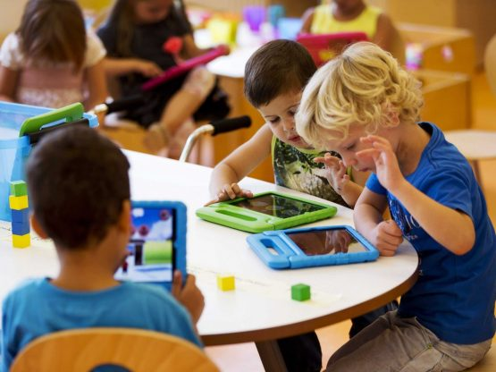
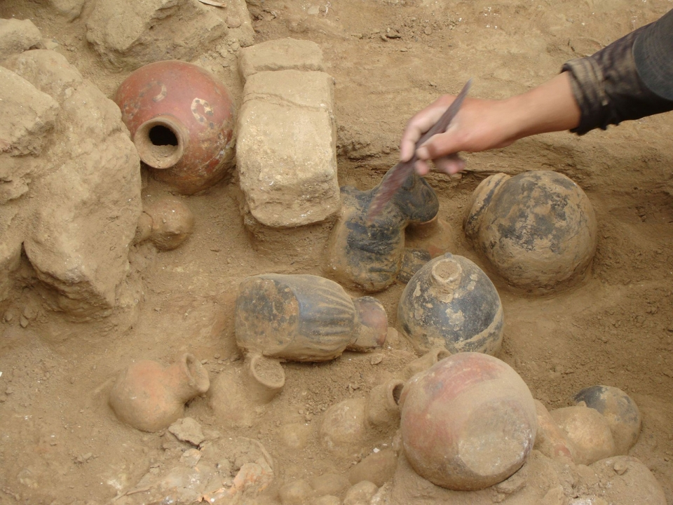

En el interior del Uruguay, muchos objetos y relatos históricos locales no están registrados ni digitalizados de forma accesible para la comunidad, especialmente para niños y adolescentes.
Esta falta de difusión impide que las nuevas generaciones valoren su patrimonio cultural y comprendan su historia desde una perspectiva cercana y significativa.
Nuestro objetivo
Diseñar una solución tecnológica que integre robótica terrestre, exploración aérea con dron, desarrollo web y videojuegos educativos para simular la búsqueda y recuperación de objetos históricos del pasado, promoviendo la valoración del patrimonio cultural local de forma accesible, lúdica e innovadora.
Descripción del proyecto
"Exploradores del Pasado" es una propuesta que combina distintas tecnologías para recrear una misión arqueológica.
El sistema se compone de tres elementos principales detallados en las siguientes pantallas.
Drones
Exploración aérea con dron
El dron sobrevuela el área de exploración simulada y capta imágenes y video del terreno.
Con base en estos datos, se delimita la zona segura y se marca la ruta más eficiente para el desplazamiento del robot terrestre.
Esta información se utiliza tanto para la planificación de la exploración, como para alimentar el contenido multimedia de la web y el videojuego.
Prueba de Dron
Se utiliza como medio de comunicación WiFI.
La aplicación es intuitiva, lo que facilita el uso de Dron.
La cámara tiene cortes y se observa un pequeño delay en el joystick entre las órdenes y el tiempo de respuesta.
El día de prueba no había mucho viento, pero surgían algunas ráfagas que movía el dron y enseguida se estabilizaba.
Robotica
Robot recolector de objetos
Diseñado para recorrer el terreno explorado previamente por el dron.
Recolecta objetos que simulan “tesoros del pasado” (pueden ser impresiones 3D de herramientas, cerámicas, fósiles, etc.).
Lleva los objetos hacia una base para ser registrados y digitalizados.
Puede contar con sensores para evitar obstáculos y seguir rutas marcadas o dirigido por humanos.
Pagina WEB
Página web del proyecto
Actúa como bitácora del proceso, donde se documentan:
Las misiones del robot y del dron.
Las historias detrás de cada objeto.
Videos, fotos y entrevistas con vecinos, docentes o historiadores.
El sitio será accesible y visualmente amigable para estudiantes de primaria y secundaria.
Videojuego

Videojuego educativo
Diseñado para niños y adolescentes.
Fomenta la investigación, la observación y el aprendizaje lúdico.
Exploradores del pasado

Enfoque educativo e interdisciplinario
El proyecto integra conocimientos de:
Robótica y programación.
Tecnologías de la información y comunicación.
Historia y patrimonio cultural.
Experiencia de usuario (Diseño web)
Narrativa digital y gamificación.
Trabajo en equipo, pensamiento crítico y creatividad.